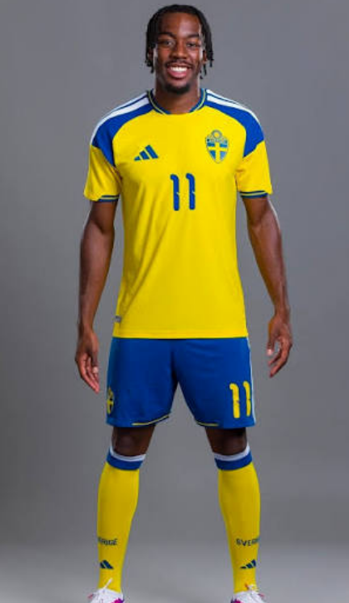
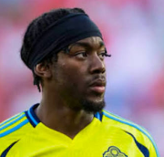
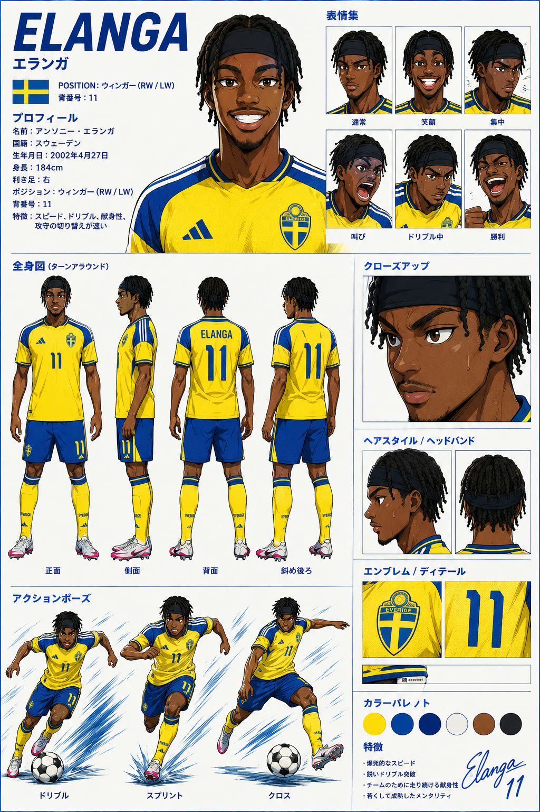
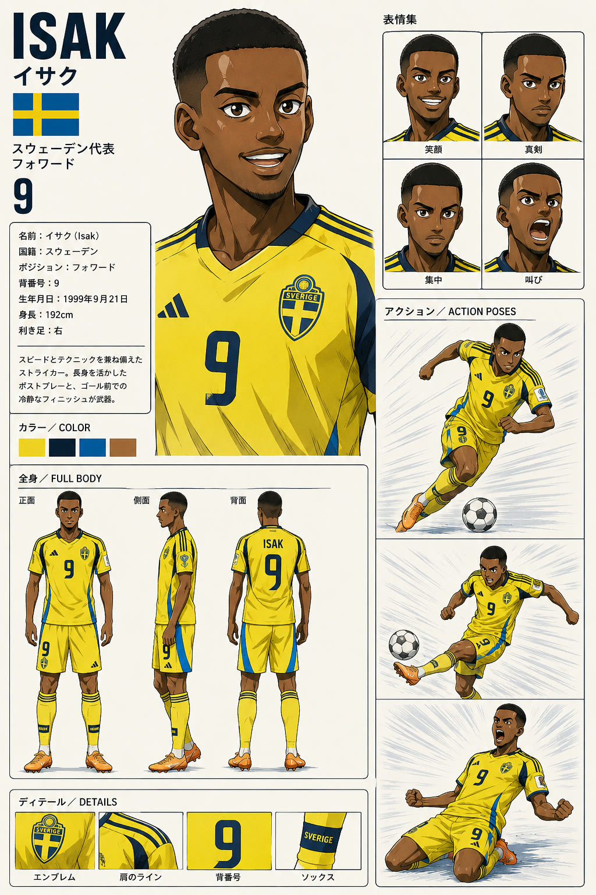
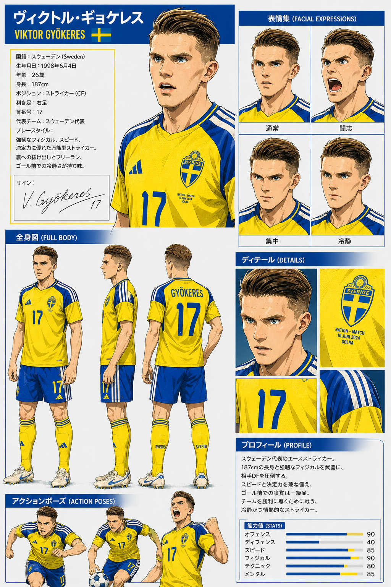
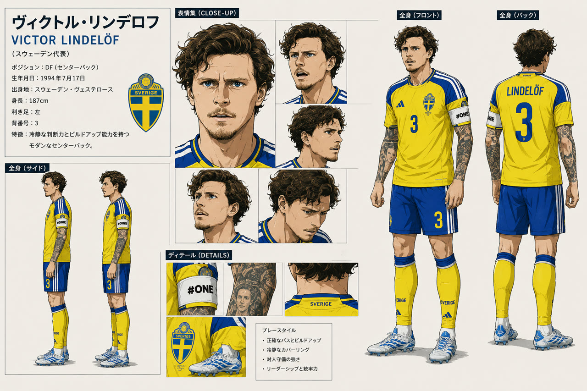
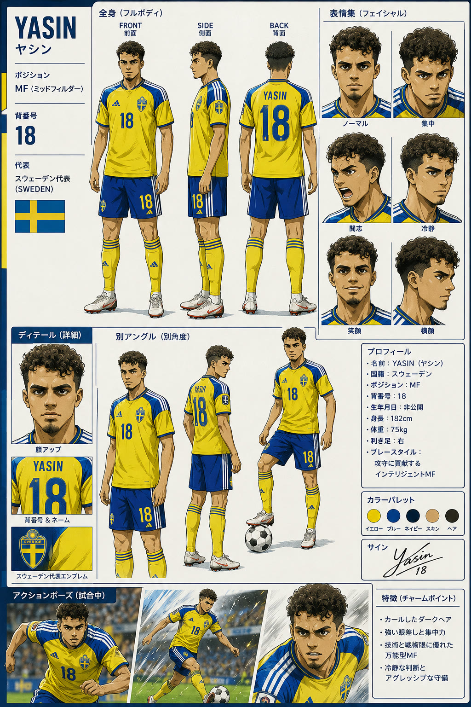
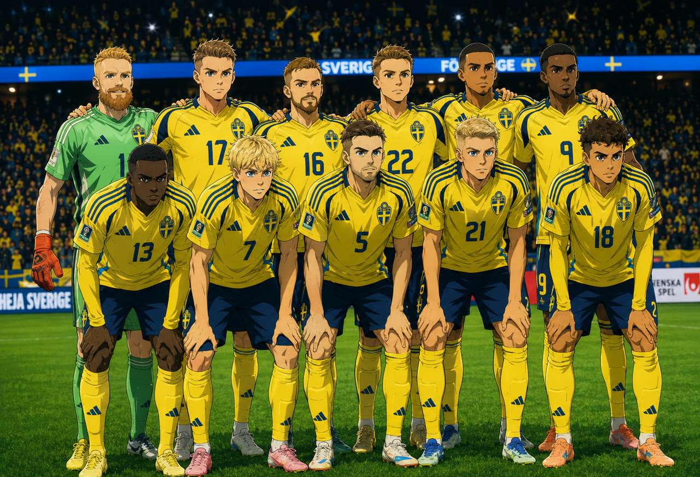

Riktiga spelare blir anime-karaktärer, auran exploderar bakom dem i målögonblicket, allt i 16:9 med snabba klipp. Här är hela arbetsflödet jag faktiskt använde: ChatGPT för karaktärsblad, Seedance 2.0 för videon, valfri editor för att klippa ihop. Med de exakta prompterna och klippen de gav.
Det här blocket börjar varje prompt. Det är det som gör att klippen ser ut som riktig anime och inte som generisk AI. Klistra in det överst, lägg sen till din scen efter det.
Classic anime cel-shading: flat saturated base colors with one hard shadow layer and one deeper shadow, crisp clean highlights, NO soft airbrushing, NO realistic rendering. Warm orange-brown skin tones, flat bold jersey colors, hair with sharp reflective highlights. Strong high-contrast cinematic lighting, bright rim light, cool blue highlights mixed with warm light, small bloom and soft glow, specular highlights. Highly expressive face: detailed eyes with bright catchlights and subtle iris gradients, thick eyebrows, intense exaggerated expression, crisp sharp line art. Modern sports anime, Blue Lock aesthetic, 8k, anime masterpiece frame.
Formeln för resten av prompten — efter stilblocket bygger du alltid så här:
En tydlig bild på den riktiga personen räcker. Till själva karaktärsbladet funkar det till och med med bara namnet, men en bild ger bättre likhet.
Ett blad per spelare. Byt ut namnet för varje. Här är exakt hur jag gjorde Elanga: jag matade in två skärmdumpar av honom (helkropp och ansikte) och bad ChatGPT om ett blad.
ChatGPT

Create a character sheet of this Swedish player called [NAME], with close-ups and full-body shots from different angles, in Japanese anime style.

Så här ser hela laget ut när varje spelare körts genom samma steg (plus en gruppbild):





Mata inte in hela det röriga bladet som referens, rutnätet förvirrar modellen. Beskär ut en ren helkroppsfigur rakt framifrån (behåll gärna även en tydlig ansiktsbeskärning) och spara den som en egen bild. Den bär både ansiktet och kroppsproportionerna.
Riktiga fotbollsnamn kan få videoprompten nekad (filtret för offentliga personer). När du laddar in en referens i video-verktyget, döp den till något neutralt som swe9, swe11, swe17 (tröjnummer), inte "Elanga".
I prompten beskriver du spelaren med tröja plus nummer och taggar den neutrala handlen (eller bara @image1, @image2 för generiska platser). Ansiktet låses ändå från bilden, namnet var aldrig det som bar likheten. Du ser de här taggarna i prompterna längre ner.
Ladda in referensen (taggad med det neutrala handtaget) och kör text-till-video. Ansiktslösa klipp (avspark, bollen i nätet) behöver ingen referens alls, ren text-till-video räcker.
Seedance 2.0Jag använde varje karaktärsblad (den beskurna figuren) som en referensbild, inte som en startbild. Du laddar in bilden i referens-läget och låter prompten styra hela scenen.
16:9. ~5 sek för enkla beats, 6-8 sek för revealer och firande med flera spelare. Baka in "natural proportions, no warping" i prompten. Generera 2-3 tagningar och behåll den renaste. Seedance gav bäst resultat här (Kling var sämre).
Namnplattor på ögonblixten, en talad replik eller undertext. Seedance gör inget ljud, så lägg till röst (t.ex. ElevenLabs) och ljudeffekter i redigeringen.
Använd valfri editor (jag använde CapCut, men vad som helst funkar, du lägger bara klippen i rätt ordning). Lägg dem i berättelseordning, lägg på ett trendande hype-ljud, klipp på beaten, lägg in din text och exportera. Klart.
CapCut · valfri editorClassic anime cel-shading: flat saturated base colors with one hard shadow layer and one deeper shadow, crisp clean highlights, NO soft airbrushing, NO realistic rendering. Warm orange-brown skin tones, flat bold jersey colors, hair with sharp reflective highlights. Strong high-contrast cinematic lighting, bright rim light, cool blue highlights mixed with warm light, small bloom and soft glow, specular highlights. Crisp sharp line art. Modern sports anime, Blue Lock aesthetic, 8k, anime masterpiece frame. A wide cinematic establishing shot of a floodlit night football stadium. On the right side of the frame the players' tunnel exit opens onto the pitch; the Swedish national team in yellow jerseys with blue trim jogs out of the tunnel mouth onto the bright green grass. The camera holds a wide cinematic establishing angle and slowly pushes in. Crisp anime motion, natural proportions, no warping. Horizontal 16:9 widescreen.
Classic anime cel-shading: flat saturated base colors with one hard shadow layer and one deeper shadow, crisp clean highlights, NO soft airbrushing, NO realistic rendering. Warm orange-brown skin tones, flat bold jersey colors, hair with sharp reflective highlights. Strong high-contrast cinematic lighting, bright rim light, cool blue highlights mixed with warm light, small bloom and soft glow, specular highlights. Crisp sharp line art. Modern sports anime, Blue Lock aesthetic, 8k, anime masterpiece frame. A wide, far-away cinematic shot of a floodlit night football stadium, the whole green pitch and the packed glowing stands visible, the stands full of Sweden fans waving yellow-and-blue flags. At the center circle the Swedish team in yellow kicks off, one player rolling the ball to a teammate to start play; both teams are spread across the pitch, the Swedish players in yellow and the Japan players in dark blue, small in the wide frame. Cool blue night light with warm floodlight glow, a soft electric-blue aura flickering low along the bottom edge of the frame. The camera holds a high wide angle and slowly pushes in. Crisp anime motion, natural proportions, no warping. Horizontal 16:9 widescreen.
Classic anime cel-shading: flat saturated base colors with one hard shadow layer and one deeper shadow, crisp clean highlights, NO soft airbrushing, NO realistic rendering. Warm orange-brown skin tones, flat bold jersey colors, hair with sharp reflective highlights. Strong high-contrast cinematic lighting, bright rim light, cool blue highlights mixed with warm light, small bloom and soft glow, specular highlights. Highly expressive face: detailed eyes with bright catchlights and subtle iris gradients, thick eyebrows, intense exaggerated expression, crisp sharp line art. Modern sports anime, Blue Lock aesthetic, 8k, anime masterpiece frame. A Swedish player in a yellow Sweden jersey with blue trim, matching reference @image1, is dribbling the ball forward on a floodlit night pitch. A Japan player in a dark blue kit, seen from behind with his face not visible, moves across and takes the ball cleanly off him, then passes it sideways to another Japan player in a dark blue kit, also faceless and seen from behind. The camera follows the ball the whole time, from the Swedish player to the first Japan player winning it to the pass. Cool blue night light, realistic kits, no glowing aura. Crisp anime motion, one clear readable sequence, natural proportions, no warping. Horizontal 16:9 widescreen.
Classic anime cel-shading: flat saturated base colors with one hard shadow layer and one deeper shadow, crisp clean highlights, NO soft airbrushing, NO realistic rendering. Warm orange-brown skin tones, flat bold jersey colors, hair with sharp reflective highlights. Strong high-contrast cinematic lighting, bright rim light, cool blue highlights mixed with warm light, small bloom and soft glow, specular highlights. Crisp sharp line art. Modern sports anime, Blue Lock aesthetic, 8k, anime masterpiece frame. A floodlit night football stadium, packed glowing stands behind. A Japanese attacker in a dark blue Japan kit runs forward and drives past a Swedish defender in the yellow-and-blue Sweden kit, then faces the goal and strikes the ball low into the net past the diving Sweden goalkeeper in yellow. The camera tracks the Japanese attacker from the side as he beats the defender and shoots, then follows the ball into the net as it ripples. Cold blue stadium light, the warmth draining from the frame, faint grey ash drifting, a hush falling over the crowd. Crisp anime motion, one clear readable action, natural proportions, no warping. Horizontal 16:9 widescreen.
Classic anime cel-shading: flat saturated base colors with one hard shadow layer and one deeper shadow, crisp clean highlights, NO soft airbrushing, NO realistic rendering. Warm orange-brown skin tones, flat bold jersey colors, hair with sharp reflective highlights. Strong high-contrast cinematic lighting, bright rim light, cool blue highlights mixed with warm light, small bloom and soft glow, specular highlights. Highly expressive face: detailed eyes with bright catchlights and subtle iris gradients, thick eyebrows, intense exaggerated expression, crisp sharp line art. Modern sports anime, Blue Lock aesthetic, 8k, anime masterpiece frame. @Isak, the Swedish striker in a yellow Sweden jersey number 9 with blue trim, stands on a floodlit night pitch. His head drops for a beat, then snaps up as his jaw clenches and his eyes narrow into a hard furious glare; a low dark-blue frustrated aura flickers around his clenched fists, frost cracking sharply at his feet. The camera slowly pushes in on his face. Cold blue rim light, no warm tones. Crisp anime motion, keep his face and kit consistent, natural proportions, no warping. No spectral creature. Horizontal 16:9 widescreen.
Classic anime cel-shading: flat saturated base colors with one hard shadow layer and one deeper shadow, crisp clean highlights, NO soft airbrushing, NO realistic rendering. Warm orange-brown skin tones, flat bold jersey colors, hair with sharp reflective highlights. Strong high-contrast cinematic lighting, bright rim light, cool blue highlights mixed with warm light, small bloom and soft glow, specular highlights. Highly expressive face: detailed eyes with bright catchlights and subtle iris gradients, thick eyebrows, intense exaggerated expression, crisp sharp line art. Modern sports anime, Blue Lock aesthetic, 8k, anime masterpiece frame. @swe3, the Swedish defender in a yellow Sweden jersey number 3 with blue trim, stands on the floodlit night pitch, head bowed for a moment, then he lifts his chin with a hard determined scowl and clenches a fist; his runestone aura flares back from cold grey to a sharp glowing edge. The camera drifts slowly in on him. Muted grey-blue grade warming at the edges. Crisp anime motion, keep his face and kit consistent, natural proportions, no warping. No spectral creature. Horizontal 16:9 widescreen.
Classic anime cel-shading: flat saturated base colors with one hard shadow layer and one deeper shadow, crisp clean highlights, NO soft airbrushing, NO realistic rendering. Warm orange-brown skin tones, flat bold jersey colors, hair with sharp reflective highlights. Strong high-contrast cinematic lighting, bright rim light, cool blue highlights mixed with warm light, small bloom and soft glow, specular highlights. Highly expressive face: detailed eyes with bright catchlights and subtle iris gradients, thick eyebrows, intense exaggerated expression, crisp sharp line art. Modern sports anime, Blue Lock aesthetic, 8k, anime masterpiece frame. @swe11, the Swedish winger in a yellow Sweden jersey number 11 with blue trim, stands on the floodlit night pitch, head bowed for a moment, then he lifts his chin with a fierce, determined expression, eyes burning with resolve, his whole body tensing as a molten-gold ember aura flares to life around him, warm orange sparks rising. The camera drifts slowly in on him. Deep night-blue grade warming to gold at the edges. Crisp anime motion, keep his face and kit consistent, natural proportions, no warping. No spectral creature. Horizontal 16:9 widescreen.
Classic anime cel-shading: flat saturated base colors with one hard shadow layer and one deeper shadow, crisp clean highlights, NO soft airbrushing, NO realistic rendering. Warm orange-brown skin tones, flat bold jersey colors, hair with sharp reflective highlights. Strong high-contrast cinematic lighting, bright rim light, cool blue highlights mixed with warm light, small bloom and soft glow, specular highlights. Crisp sharp line art. Modern sports anime, Blue Lock aesthetic, 8k, anime masterpiece frame. A floodlit night football stadium at kickoff, packed glowing stands behind. Tight low angle on the ball resting on the center spot; a Swedish player's boot in a yellow-and-blue kit steps in and passes the ball to @swe17, who receives it and brings it under control. Number 17 then lifts his head and looks around and up across the field, searching for a teammate to pass to, but holds onto the ball without passing. The camera stays low, following the ball to number 17, then rises slightly to settle on him as he looks up. Cool blue night light with warm floodlight glow and faint bloom, a soft electric-blue aura flickering low along the bottom edge of the frame. Smooth crisp anime motion, no warping. Horizontal 16:9 widescreen.
Classic anime cel-shading: flat saturated base colors with one hard shadow layer and one deeper shadow, crisp clean highlights, NO soft airbrushing, NO realistic rendering. Warm orange-brown skin tones, flat bold jersey colors, hair with sharp reflective highlights. Strong high-contrast cinematic lighting, bright rim light, cool blue highlights mixed with warm light, small bloom and soft glow, specular highlights. Highly expressive face: detailed eyes with bright catchlights and subtle iris gradients, thick eyebrows, intense exaggerated expression, crisp sharp line art. Modern sports anime, Blue Lock aesthetic, 8k, anime masterpiece frame. @swe17, a Swedish player in a yellow Sweden jersey number 17 with blue trim, plays a pass across the floodlit night pitch to @swe11, a Swedish winger in a yellow Sweden jersey number 11 with blue trim, on the right side just outside the box. Dark blue Japan opponents are spread around them across the pitch, blurred and out of focus in the background, and the packed stands behind are full of Sweden fans waving yellow-and-blue flags and cheering. @swe11 controls the ball at his feet and looks up toward the goal, a first thin trail of golden embers stirring around him. The camera follows the ball from @swe17 to @swe11, then settles on @swe11 as he takes the ball. The two Swedish players stay sharp and in focus, everything else soft. Deep night-blue background with warm gold rim light. Crisp anime motion, one clear readable pass, natural proportions, no warping. Horizontal 16:9 widescreen.
Classic anime cel-shading: flat saturated base colors with one hard shadow layer and one deeper shadow, crisp clean highlights, NO soft airbrushing, NO realistic rendering. Warm orange-brown skin tones, flat bold jersey colors, hair with sharp reflective highlights. Strong high-contrast cinematic lighting, bright rim light, cool blue highlights mixed with warm light, small bloom and soft glow, specular highlights. Highly expressive face: detailed eyes with bright catchlights and subtle iris gradients, thick eyebrows, intense exaggerated expression, crisp sharp line art. Modern sports anime, Blue Lock aesthetic, 8k, anime masterpiece frame. The Swedish winger in a yellow Sweden jersey number 11 with blue trim is just outside the box on the right side of a floodlit night pitch with the ball in front of him. He takes one strong planted step and strikes a powerful curling shot with his left foot, full follow-through. The instant his boot connects, a massive spectral Viking warrior spirit wreathed in golden flame and embers rises behind him, sparks scattering, his eyes blazing. The camera holds a low hero angle with a fast bullet-time snap on the moment of contact, then sweeps around to directly behind him, over his shoulder, looking out toward the goal. From this behind-the-back view the ball flies away from him in one clean arc into the top corner of the net past the diving Japan goalkeeper in a dark blue kit. Anime speed lines, motion blur and heavy gold bloom, deep night-blue sky with molten-gold and ember-orange light flaring across the frame. Keep his face and kit consistent, natural proportions, no warping. Horizontal 16:9 widescreen.
Classic anime cel-shading: flat saturated base colors with one hard shadow layer and one deeper shadow, crisp clean highlights, NO soft airbrushing, NO realistic rendering. Warm orange-brown skin tones, flat bold jersey colors, hair with sharp reflective highlights. Strong high-contrast cinematic lighting, bright rim light, cool blue highlights mixed with warm light, small bloom and soft glow, specular highlights. Highly expressive face: detailed eyes with bright catchlights and subtle iris gradients, thick eyebrows, intense exaggerated expression, crisp sharp line art. Modern sports anime, Blue Lock aesthetic, 8k, anime masterpiece frame. @image1, the goalscorer in a yellow Sweden jersey number 11 with blue trim, wheels away roaring with both arms spread wide, mouth open in a fierce shout, eyes alight. Four Swedish teammates in yellow jerseys, matching the saved team-photo references, sprint in from the edges and pile around him with arms raised, faces lit with joy, celebrating together. Behind them the golden Viking warrior spirit from the strike breaks apart into a green-teal aurora over a faint Viking longship silhouette, embers still drifting. The camera whip-pans onto the goalscorer's roar, then pulls back to take in the whole group, heavy bloom. Keep every face and kit consistent with the references, natural proportions, no warping. Horizontal 16:9 widescreen.
"Plantera, skjut, följ igenom." Akrobatiska rörelser warpar. En tydlig handling per klipp ger ett rent resultat.
Frost och varg, storm och blixt, smält guld och eld. Då ser de inte alla likadana ut och varje karaktär får sin egen känsla.
Den spöklika anden som brister fram är hela "Blue Lock"-looken. Men spara full aura till målögonblicket, minimal eller ingen aura på lugna klipp, så landar det när det väl smäller.
Inga våldsord (fist, clench, scowl, grab, hit, attack) och inga riktiga namn på offentliga personer. Förmedla ilska genom ansiktet och energin ("eyes burning, body tensing"). Skriv "warrior spirit", inte "berserker" eller "beast".
Jag visar hur du använder AI i ditt jobb och företag, från första frågan till färdig rutin. Skriv till mig så snackar vi.
Skriv till mig på Instagram